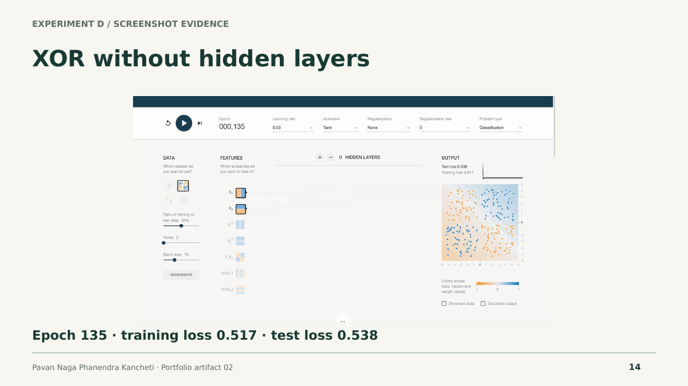
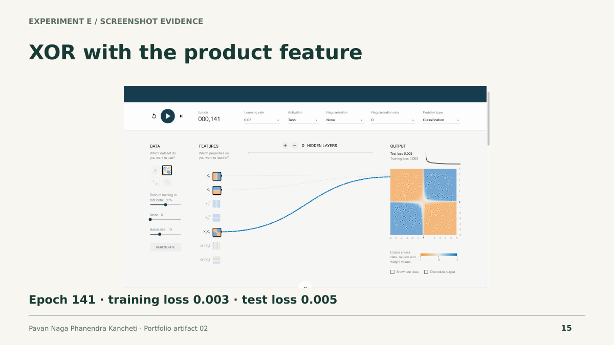
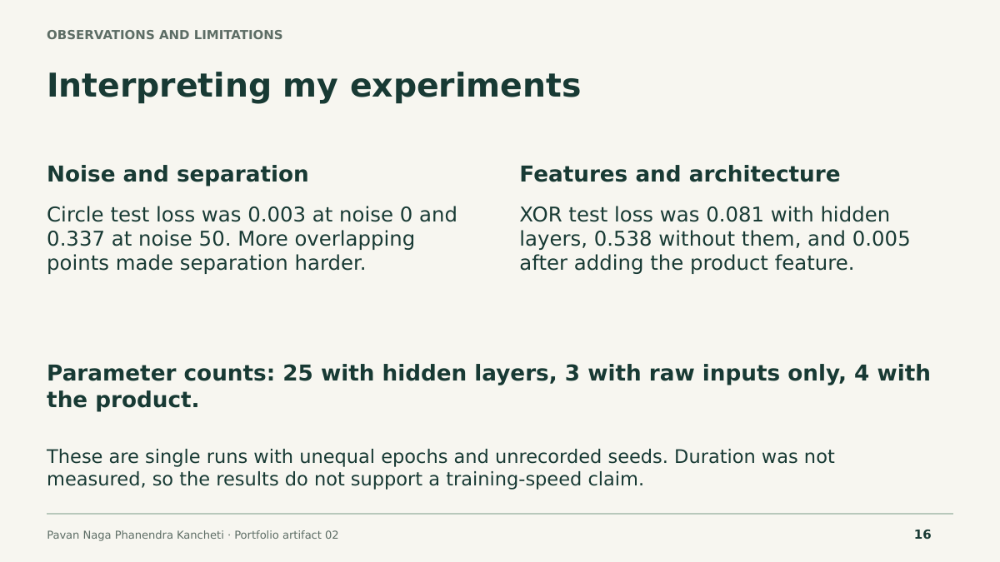
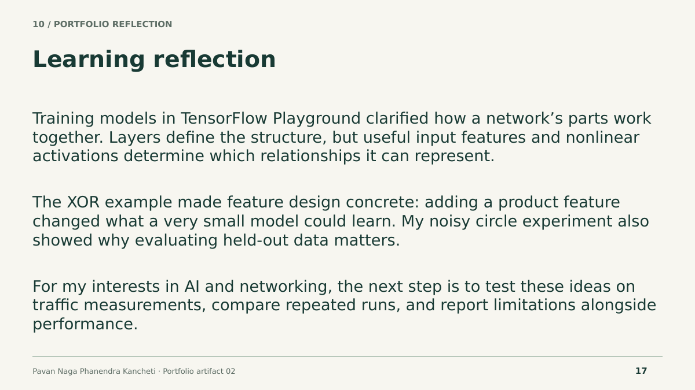
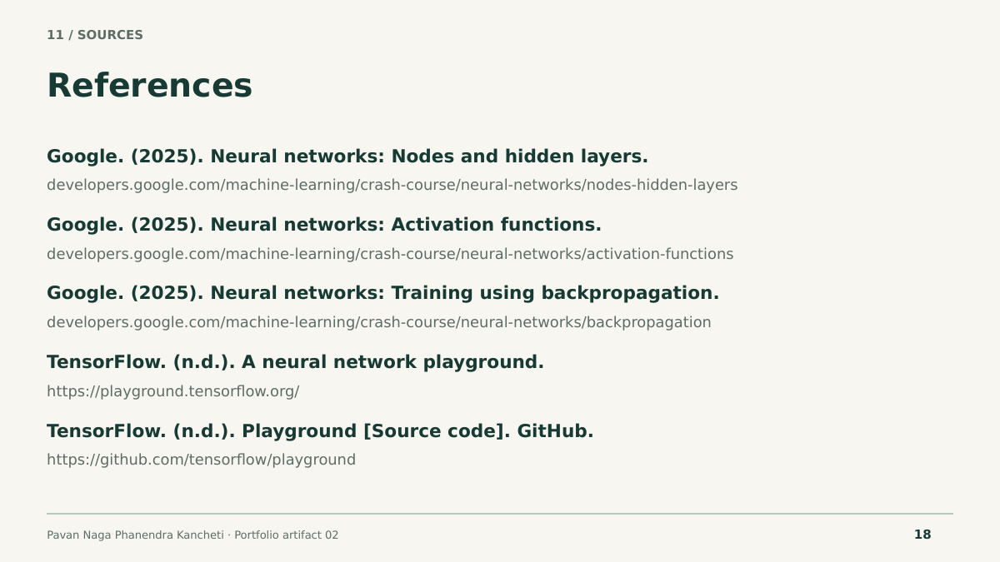
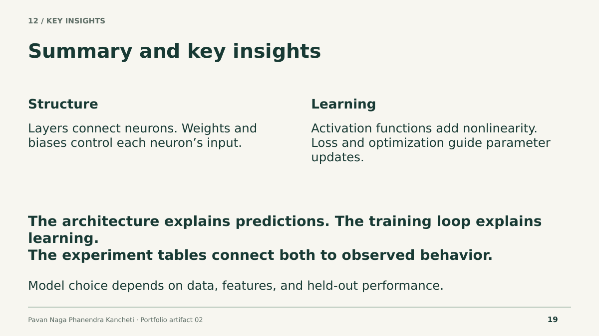

Project context and approach
This artifact explains six components: layers, neurons, weights, activation functions, loss functions, and optimization algorithms. The challenge is to connect each definition to its role in a complete learning process. An editable network diagram shows forward data flow; a training-loop diagram separates gradient calculation from parameter updates.
Skills demonstrated: technical communication, neural network fundamentals, feature engineering, experimental interpretation, and visual presentation.
View all 19 slides on this page








My TensorFlow Playground experiments
I used classification, learning rate 0.03, tanh, no regularization, batch size 10, and a 50% training split. Each row records the actual checkpoint in my screenshot.
| Run / data | Hidden layers | Inputs | Epoch | Training loss | Test loss |
|---|---|---|---|---|---|
| A · circle, noise 0 | 4 → 2 | x₁, x₂ | 287 | 0.002 | 0.003 |
| B · circle, noise 50 | 4 → 2 | x₁, x₂ | 293 | 0.293 | 0.337 |
| C · XOR, noise 0 | 4 → 2 | x₁, x₂ | 117 | 0.032 | 0.081 |
| D · XOR, noise 0 | None | x₁, x₂ | 135 | 0.517 | 0.538 |
| E · XOR, noise 0 | None | + x₁x₂ | 141 | 0.003 | 0.005 |
The noisy circle run had greater class overlap and higher loss. For XOR, hidden layers or the product feature helped represent the four-region pattern. The raw-input model with no hidden layers did not separate it effectively.
These are single exploratory runs with unequal epochs and unrecorded seeds. Elapsed training time was not measured. Loss is not an accuracy percentage. The presentation includes all five genuine screenshots.
Learning reflection
Training models in TensorFlow Playground helped me connect neural network components to visible changes in predictions. I explored circle and XOR datasets, changed noise, removed hidden layers, and added a product feature. The noisy circle run produced more overlapping classes and higher losses than the clean circle run.
The XOR experiments made the role of representation especially clear. With two hidden layers, the model formed a curved boundary. Without hidden layers and using only the two raw inputs, it did not separate the four regions effectively. Adding the product feature improved the observed separation even with no hidden layers. This helped me see why useful features can matter as much as adding model complexity.
A practical challenge was pausing training at the intended epoch. I recorded the actual checkpoints rather than presenting them as equal. I also learned that loss is not an accuracy percentage and that epochs do not measure elapsed time. Creating diagrams helped me distinguish forward prediction, gradient calculation, and parameter updates. For my interest in AI and networking, I would next apply these ideas to traffic measurements and evaluate false alarms alongside overall performance.
Sources and further exploration
- Google: Nodes and hidden layers
- Google: Activation functions
- Google: Training using backpropagation
- TensorFlow Playground
- TensorFlow Playground source code
Source notes are included in the PowerPoint. The final slide summarizes why visualizing neural networks helps explain predictions and learning.